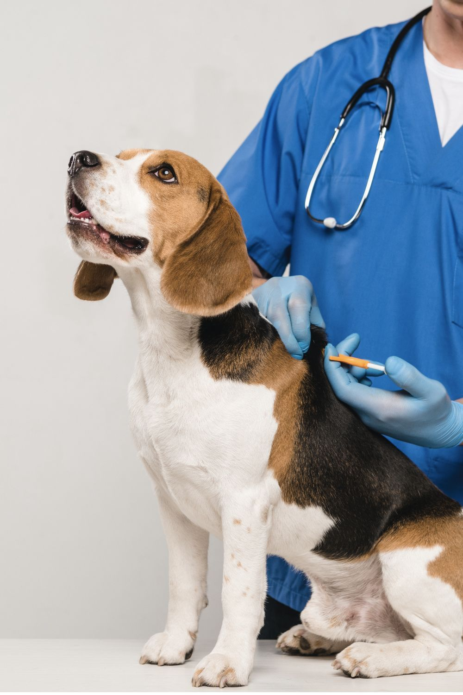
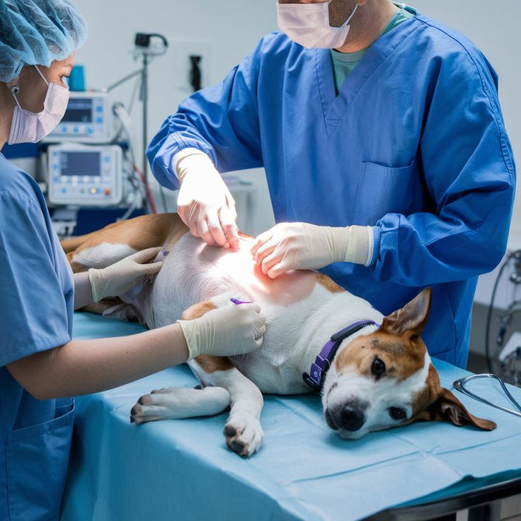
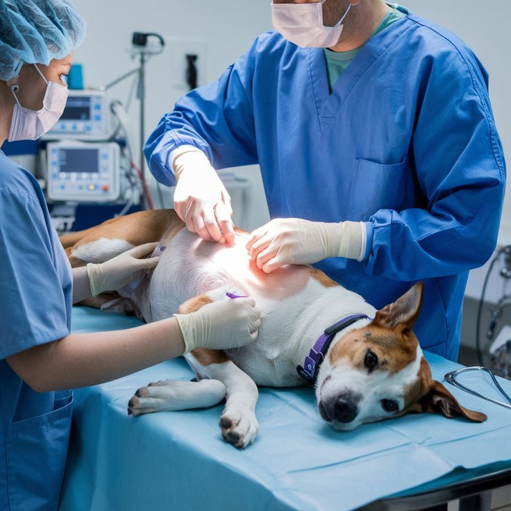
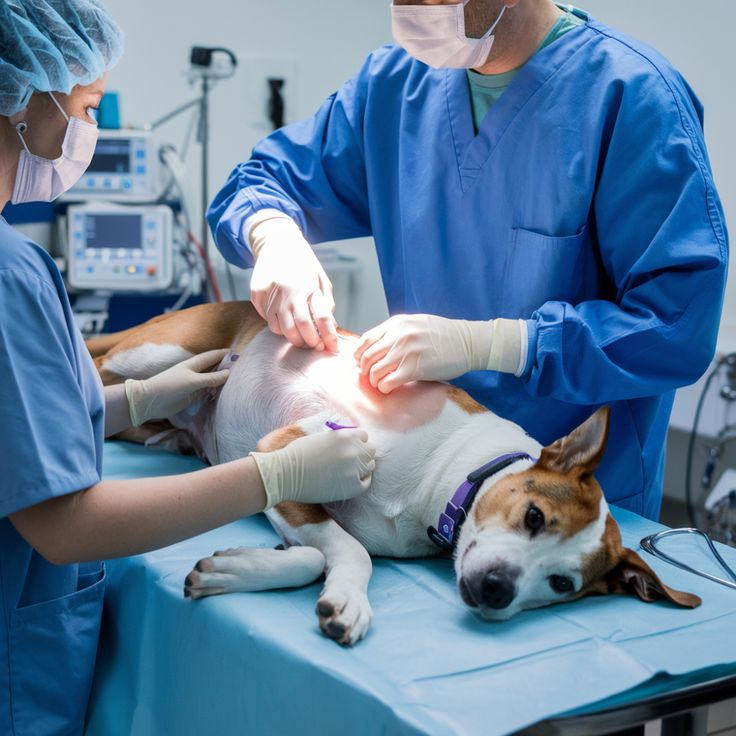

Proyecto de conservación • Huellitas Argentinas
Campaña de Esterilización
Castraciones barriales para prevenir camadas no deseadas, reducir el abandono y mejorar el bienestar de perros y gatos en nuestra comunidad.

¿Por qué esterilizar?
La esterilización es la herramienta más efectiva para controlar la población canina y felina. Reduce el abandono, previene enfermedades y mejora la calidad de vida.
Objetivos del proyecto
- Disminuir camadas no planificadas y el abandono.
- Acercar servicios veterinarios a zonas vulnerables.
- Educar sobre salud reproductiva y tenencia responsable.
- Generar datos para políticas públicas.
Actividades principales
Jornadas barriales
Castraciones con turno previo.
Registro y seguimiento
Control post-operatorio.
Educación comunitaria
Charlas y concientización.
En acción

 


Resultados del último semestre
320
castraciones realizadas
87%
en barrios prioritarios
+12
alianzas logradas